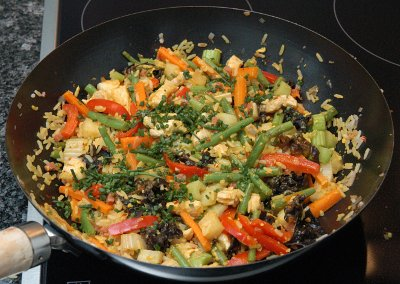

| Zutaten für 4 Personen: | |
| 1/4 Beutel | Judasohren |
| 400 g | Trutenschnitzel |
| 200 g | Schinken am Stück |
| 1 | Zwiebel |
| 1 | Knoblauchzehe |
| 600 g | Gemüse z.B.
|
| 1 | Ei |
| 1 Sachet | Safranpulver |
| 1 dl | Erdnussöl |
| 400 g | Carolina Reis |
| Ingwerpulver | |
| Sambal Oelek | |
| Salz | |
| Sesamöl | |
| 1 Bund | Schnittlauch |
Pilze einweichen.
Reis zubereiten.
Trutenfleisch und Schinken würfeln
Zwiebel und Knoblauch hacken.
Gemüse und Pilze in Streifen schneiden.
Ei und Safran verquirlen.
Schnittlauch schneiden.
Öl erhitzen, Trutenwürfel anbraten.
Nacheinander mitbraten: Schinken, Zwiebel, Knoblauch, Karotten, Lauch, Kabis, Pilze, Peperoni, Erbsen, Keimlinge und Reis.
Mit Ei übergiessen, mitbraten und würzen.
Mit Schnittlauch garnieren.
Migros Rezepte vom Küchenchef
RE 10.2.2000 Ganz gut. Insbesondere da ich mit den Zutaten frei experimentiert hatte.
Am 19.8.2009 war es wiederum sehr schmackhaft. Ich mag die Sojabohnensprossen nicht besonders also habe ich die weggelassen. Sandra meint, die Selleriestengel die ich da noch verwertet habe hätten nicht gepasst. Ich habe darauf geachtet, die Teile die etwas länger brauchen zuerst im Wok anzubraten. Schinken gibt es schon gewürfelt in der Migros. Obwohl ich mich bemüht hatte die halbe Menge für 2 Personen zuzubereiten gab das eine riesige Portion. Somit gibt es Resten für Morgen. RE
@LINKBACK_TAG@ @WAKELOCK@